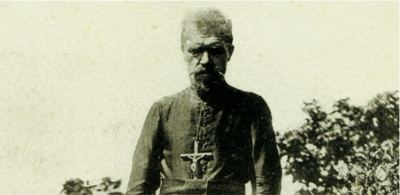
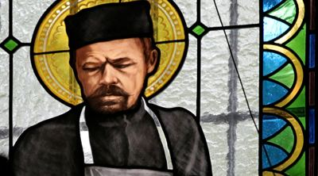

Isusovački blaženici
Svećenik
Bl. Ivan Beyzym
1850. – 1912.
Poljski isusovac na Madagaskaru živio je među oboljelima od gube, pružao im njegu i pokrenuo izgradnju bolnice, braneći njihovo ljudsko dostojanstvo svakoga dana.
Tekst je preveden i prilagođen uz pomoć umjetne inteligencije.

Izvor slike


Izvor slike


Izvor slike
- Spomendan
- 2. siječnja
- Zaštitništvo
- Nije navedeno u izvoru
- Životni vijek
- 1850. – 1912.
- Djelovanje
- Misije i evangelizacija · Siromašni i isključeni · Bolesnici i umirući
- Razdoblje
- 19., 20. stoljeće
- Ulazak u Družbu
- 10. prosinca 1872.
- Svećeničko ređenje
- 1881.
- Datum rođenja
- 15.05.1850.
- Mjesto rođenja
- Beyzymy Wielkie, Volinj, današnja Ukrajina
- Datum smrti
- 02.10.1912.
- Mjesto smrti/mučeništva
- Marana kod Fianarantsoe, Madagaskar
- Okolnosti smrti/mučeništva
- Umro nakon dugogodišnje skrbi za oboljele od gube.
- Uloga
- Svećenik
- Mučenik
- Ne
- Ostale oznake
- Misionar na Madagaskaru; Misionar i njegovatelj oboljelih od gube; utemeljitelj bolnice u Marani
- Pripadnost
- Isusovac
- Drugi oblici imena
- John Beyzym · John · Jan Beyzym
Životopis
Ivan, odnosno Jan Beyzym, rođen je 15. svibnja 1850. u Beyzymyju Wielkom u Voliniji, na području današnje Ukrajine. Nakon gubitka obiteljskoga posjeda u političkim previranjima školovao se u Kijevu. U novicijat u Staroj Wsi stupio je 10. prosinca 1872. Već je tada tijekom epidemije kolere posjećivao oboljele. Za svećenika je zaređen 26. srpnja 1881. u Krakovu.
Sedamnaest je godina radio s mladima u Tarnopolu i Chyrówu: predavao francuski i ruski te vodio školsku ambulantu. Ipak je trajno osjećao poziv oboljelima od gube. Nakon dugoga razlučivanja i dopisivanja s generalom Luisom Martínom 1898., s četrdeset i osam godina, otišao je na Madagaskar, gdje je njegovo poznavanje francuskoga bilo korisno.
U Ambahivoraki kod Antananariva zatekao je oko stotinu i pedeset ljudi odbačenih od društva, u trošnim nastambama, bez liječenja i često bez hrane. Odlučio je stanovati među njima, njegovati rane i poboljšavati higijenu, vodu i prehranu. Priznavao je da mu je susret s bolešću isprva bio težak; ljubav prema bolesnicima nije prikrivala napor, nego ga je postupno prevladavala. Pismima u Poljsku povezivao je njihove potrebe s darovateljima.
Od 1903. u Marani kod Fianarantsoe gradio je bolnicu pod zaštitom Gospe Čenstohovske. Izabrao je mjesto s vodom i zemljom za uzgoj hrane, nadzirao radove i oblikovao ukrase kapele. Ustanova je otvorena 16. kolovoza 1911. uz pomoć priloga iz Poljske, Austrije i Njemačke. U bolničkoj službi pomagale su sestre svetoga Josipa iz Clunyja. Brigu za tijelo povezivao je s Euharistijom, molitvom i poštovanjem dostojanstva svakoga bolesnika; za duhovnu potporu molio je i karmelićanke. Umro je u Marani 2. listopada 1912.
Tekst je preveden i prilagođen uz pomoć umjetne inteligencije.
Pročitaj više na izvornoj stranici ↗